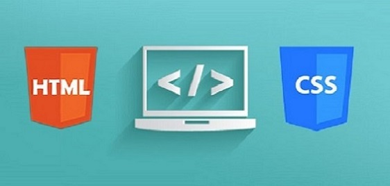
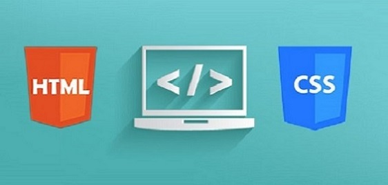

CSS Dersleri
CSS ile çalışarak zamandan kazanın!
Bu site aracılığı ile CSS kullanarak sitelerinizde tasarımlar oluşturup düzenlemeyi, değiştirmeyi ve birden fazla internet sitesinde kullanmayı öğreneceksiniz.
Umuyorum ki bu site CSS konusunda size yardımcı olacaktır. Keyifli gezintiler!


Temel Bilgiler :
Css Stilleri:
Kenarlıklar:
- Css Kutu Modeli
- Css Kenarlıklar (Border)
- Css Dış Kenarlık (Outline)
- Css Dıştan Boşluk (Margin)
- Css İçten Boşluk (Padding)